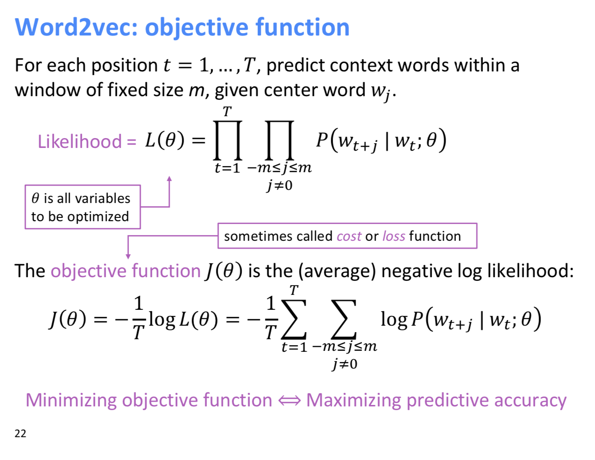
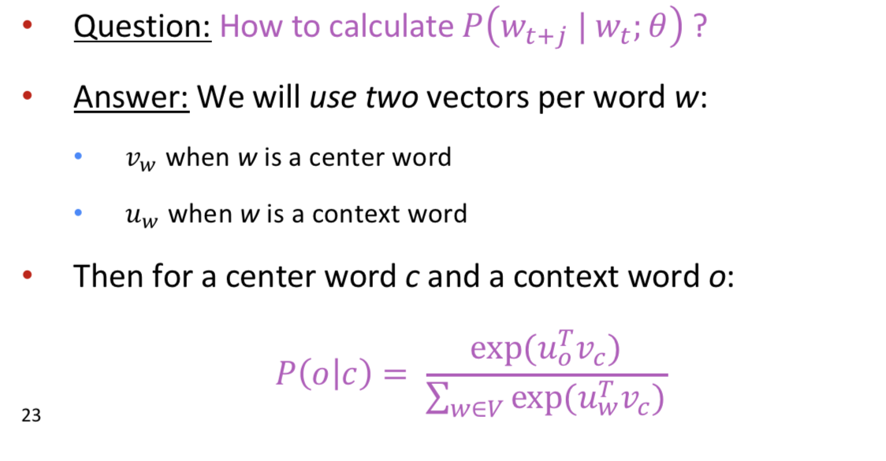
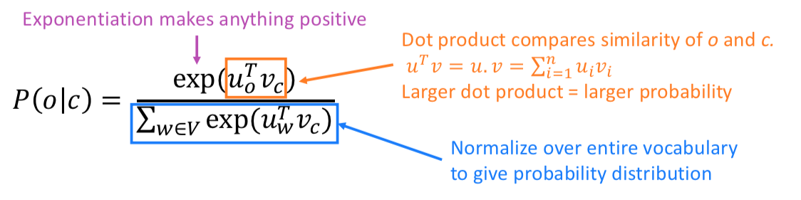
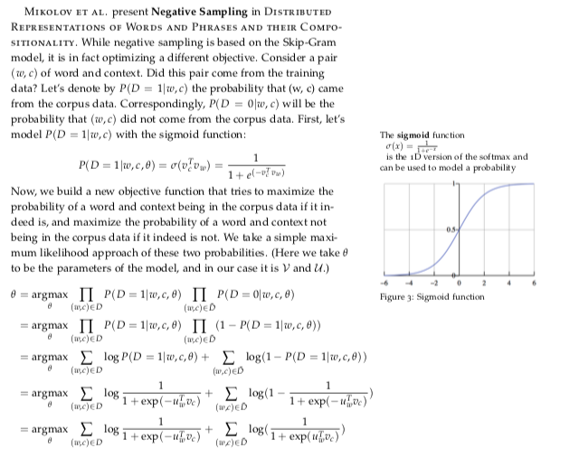
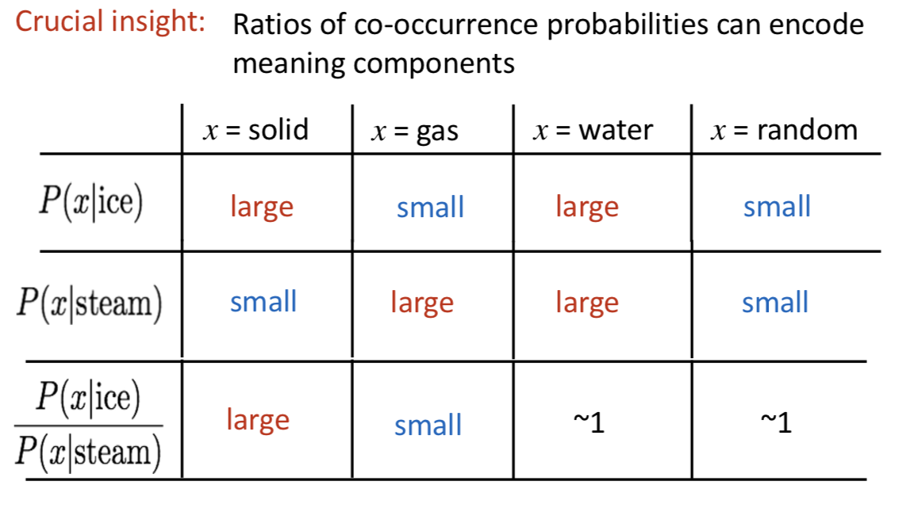
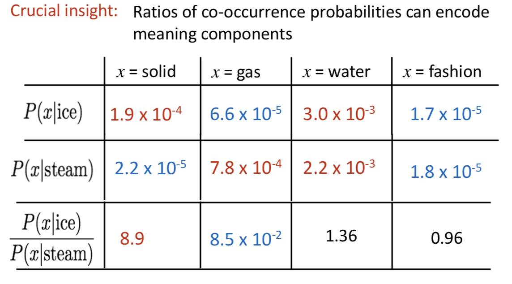

Word Vectors
Represent words by distributional semantics - "by the company they keep". 100-dim vectors do really well in capturing word semantics. How to word vectors capture semantic meaning? Whatever 'units' of meaning (captured by ferquency of context words) exist, the process to generate the word vectors must linearly map them.
Count Based Word Vectors
The simplest way to get word vectors is to keep a co-occurence matrix of words in your corpus with co-occurence defined as words which overlap in some window of fixed size. Then, take this very big co-occurence matrix and perform SVD on it to get dimensionality-reduced word vectors.
There are three disadvantages to this appraoch:
- It is hard to do when corpus size is big, large counts are given disproportinate weighting, and not so much semantic information about the words is inherent in the word vectors (if two word vectors are close to each other, it does not necessarily mean they are similar).
Word2Vec solves these problems, and the benefits of a count-based approach and Word2Vec are unified in GloVE.
Word2Vec
The Word2vec approach is an approximation of the above, seeking to minimize the KL divergence between the predicted context words and the actual context words using word vector dot-product as the simiarlity. This forces words which appear in the same context to have small dot products relative to each other. This allows the capture of higher degrees of information about semantic meaning.
We show the skipgrams implementation fo word2vec. The CBOW implementation is the same, switching center word for context word. We use the similarity of word vectors for context or outside (o) and center (c) to calculate c given o or vice cersa.

Below: U, V are word vectorsof dim d (300) for every word w.


Note: Here we use the Skipgrams implementation:
- Softmax over similarities is the prob given context word.
- The objective function is the sum over all positions, of the sum over the context of the log probabilities.
- Has a shitton of parameters - 2dV, because we have 2 vectors for each word, d dims for each word, V words in vocab. This means that gradients are very sparse for each update (they only touch a few words a time).
Alternate Word2Vec formulation is CBOW - Predicted center word from bag of context words. Very similar.
Training Word2Vec: Negative Sampling
Naive softmax is the word2vec version without negative sampling.
Negative Sampling is a variant of max-margin loss (where we try to maximize the margin between positive examples and negative examples).
Main Idea: Train binary logistic regressions for a true pair (center word and word in its context window) vs several noise pairs (the center word paired with a random word). So we avoid having a million terms in the deonminator. The Negative Sampling Objective Function is:
Jt(θ)=logσ(uTovc)+∑i=1kEj∼P(w)[logσ(−uTjvc)]
essentially, we want to maximize the similarity of the context word and push the similarities of the negatively sampled words to be as low as possible.
- They sampled words according to the distribution P(w)=U(w)3/4NormFactor, where the 3/4 power downsamples frequent words.

Aside: GloVe
How to word vectors capture semantic meaning? Whatever 'units' of meaning (captured by ferquency of context words) exist, the process to generate the word vectors must linearly map them.
Count-based Word Vectors: Old way to make word vectors
- (Relationship between Word2Vec and LSA)
- If we set the window to be the whole document size, and don't use dense embedding vectors (just use one-hot), then we have "Latent Semantic Analysis". The traditional approach to language embedding. Then you can do dimensionality reduction (SVD) on the giant matrix, and you get SVD word vectors. (This never really worked really well, so it never really caught on.)
- Then you fiddle with the counts to scale the high frequency words, count closer words more, replacing counts with Pearson correlations etc you get getter word vectors..
Issues with co-occurence vectors - very huge because of large vocabulary, and very sparse.
This sums up the two philosophies to making word embeddings:
- Skipgram
- Count-based
- Primiarily used to capture word similarity, gave disproportional importance to large counts

Large or small ratios are dimensions of meaning whereas ratios close to 1 are not.

Key insight in GloVE:
If you set wTiwj=logP(i|j), the immediately we get wTx(wa−wb)=logP(x|a)P(x|b), i.e. if you make the dot products = log(co-occurence probability), then the vector differences occur with a ratio of the co-occurence probabilities.
So the objective function to train GloVE is
J=∑i,j=1Vf(Xij)(wTiw̃ j+bi+b̃ j−logXij)2
where the
f(Xij) function controlls the influence of very common word pairs.
Essentially, set the loss to the square difference between the doct product and the log probabilities (with bias terms)
Based on count occurences but trained iteratively like Work2Vec ## Evaluation of Word Vectors
- Intrinsic word vector evaluation- Performance on Analogy tasks
Appendix:
The Structure of Langauge
We assume people have a lot of world knowledge, so we can express a lot with very limited information.
Notes On Word Vectors
- The high frequency effect - 'the' 'and' 'or' have high dot products with every word - the 'high frequency effect'. The first principal component of all word vectors is the 'high frequency effect' and if you just lop it off you can make your semantic representation better.
- Because of sparse coding (in sparse vector spaces) you can actually denoise superpositions (independent component analysis), to separate out multiple senses of a word. (Can look at the paper: Linear Algebraic Structure of Word Senses, with Applications to Polysemy).
- Wikipedia data works very well for word vectors, better than news (prob b/c of topical coveraeg).
Evaluation of Word Vectors
- Intrinsic word vector evaluation- Performance on Analogy tasks
Old Stuff
WordNet - synonym sets, people don't really use it anymore.
NLTK - swiss army knife of nlp - can do anything but not good at anything.
Always use good tools.